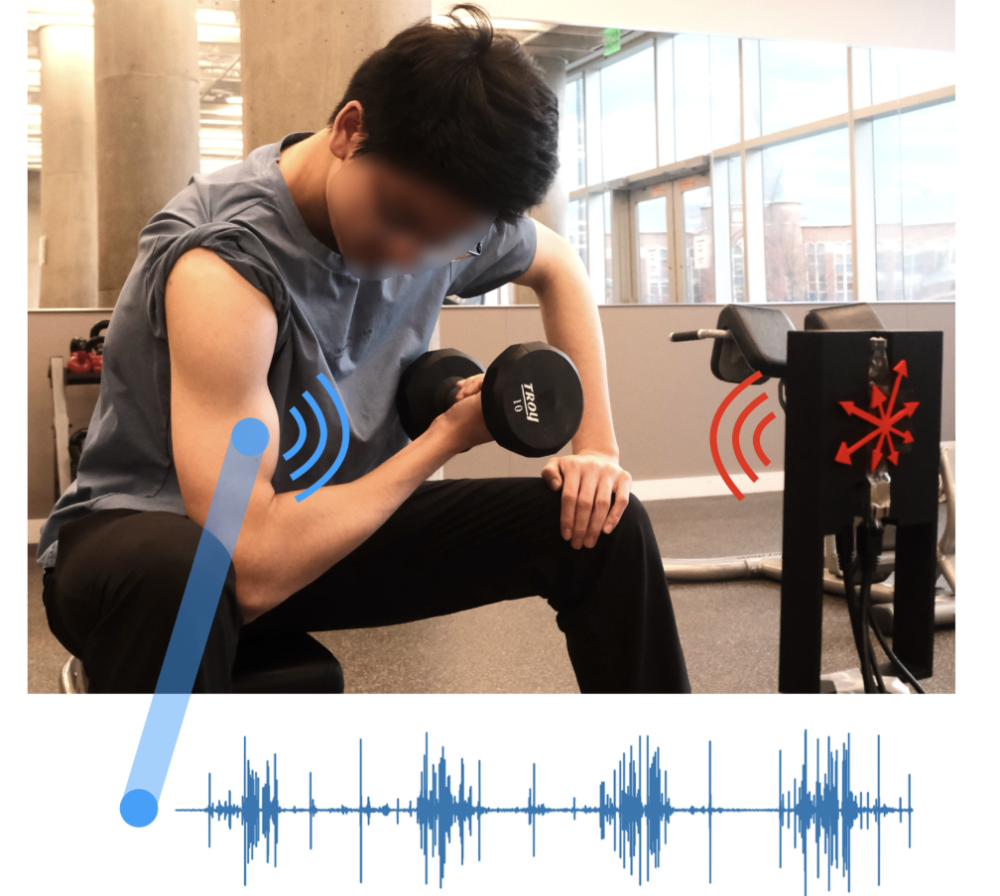

Project GigaFlex: Contactless Monitoring of Muscle Vibrations During Exercise with a Chaos-Inspired Radar
|
 |
|
|
| In this paper, our goal is to enable quantitative feedback on muscle fatigue during exercise to optimize exercise effectiveness while minimizing injury risk. We seek to capture fatigue by monitoring surface vibrations that muscle exertion induces. Muscle vibrations are unique as they arise from the asynchronous firing of motor units, producing surface micro-displacements that are broadband, nonlinear, and seemingly stochastic. Accurately sensing these noise-like signals requires new algorithmic strategies that can uncover their underlying structure. We present GigaFlex the first contactless system that measures muscle vibrations using mmWave radar to infer muscle force and detect fatigue. GigaFlex draws on algorithmic foundations from Chaos theory to model the deterministic patterns of muscle vibrations and extend them to the radar domain. Specifically, we design a radar processing architecture that systematically infuses principles from Chaos theory and nonlinear dynamics throughout the sensing pipeline, spanning localization, segmentation, and learning, to estimate muscle forces during static and dynamic weight-bearing exercises. Across a 23-participant study, GigaFlex estimates maximum voluntary isometric contraction (MVIC) root mean square error (RMSE) of 5.9%, and detects one to three Repetitions in Reserve (RIR), a key quantitative muscle fatigue metric, with an AUC of 0.83 to 0.86, performing comparably to a contact-based IMU baseline. Our system can enable timely feedback that can help prevent fatigue-induced injury, and opens new opportunities for physiological sensing of complex, non-periodic biosignals. |
Citation
- GigaFlex: Contactless Monitoring of Muscle Vibrations During Exercise with a Chaos-Inspired Radar, Jiangyifei Zhu, Yuzhe Wang, Tao Qiang, Vu Phan, Zhixiong Li, Evy Meinders, Eni Halilaj, Justin Chan and Swarun Kumar, SenSys 2026